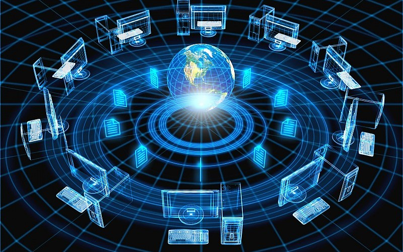

¡LA INFORMATICA!


- 

es una ciencia que administra métodos, técnicas y procesos con el fin de almacenar, procesar y transmitir información y datos en formato digital. la informática se refiere al procesamiento automático de información mediante dispositivos electrónicos y sistemas computacionales. Los sistemas informáticos deben contar con la capacidad de cumplir tres tareas básicas: entrada (captación de la infor- mación), procesamiento y salida (transmisión de los resultados). El conjunto de estas tres tareas se conoce como algoritmo.
>PRESIONA<
>PRESIONA<


PUEDES LLAMARNOS A NUESTROS TELEFONOS 4561-1321 Y SEGUIRNOS EN NUESTRA REDES SOCIALES!!!